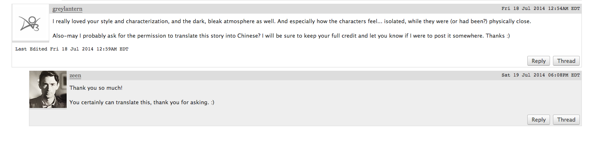

【翻译】【Finrod/Curufin】【R】Wolves at the Door by Zeen
翻译授权：

一场家庭团聚。
“狼，”Finrod说，带着一丝苍白的笑意，“比我的亲族更仁慈。”
Orodreth畏缩了，羞愧写在脸上。即使是Celegorm，在大多数事情上从不感到惭愧，此时也无法直视他的眼睛。Finduilas和Celebrimbor保持着安静，重新变回了孩子，睁大眼睛看着他们长辈的举止，他们的愚蠢和自我欺骗。他们牵着手。这看起来很奇怪。如果有人问他，Curufin会说他的儿子及其堂妹几乎完全不了解彼此。
当那群精灵蜂拥在Finrod周围时Curufin站在一边，看着他们攀附在他身上，触摸他的斗篷，惊讶于他们受爱戴的国王从他的任务中孤身生还。谣言提及Melian的女儿如何将他从Tol Sirion（它已经回复了这身份）的瓦砾中挖出，以咏唱将他的血液重新注入躯体，于是Finrod站在他们面前，几乎毫无改变。
但他改变了，他的言辞与外表中有着前所未见的坚硬锋芒，并且有一圈伤疤，狰狞的红色，环绕着他的脖颈。他改变了，不再像从前那样温暖。然而如果他改变了，Nargothrond的人民也一样，他们原先充满恐惧和疑虑，现在开始改变看法。而Fëanor的儿子们，在习惯了他们的权力后，看着它从他们指间相当彻底地流失。再一次。
人群散开了，只留下家族成员们。没有人能够直视他的眼睛。
只有Curufin敢于尝试，若有所思地皱眉。Finrod回视他，温和笑容掩藏了尖刻的言辞。
片刻沉默后，Curufin僵硬地点了点头。他说，“如果这让你高兴，我的——领主。”他在国王这个词上犹豫了，即使在这一切之后，他仍然不觉得这个称号是完全值得的。“我的兄长和我会尽快离开。召集我们的人马会需要一些时间。”
“不，那不会让我高兴。”Finrod说，盖过了Orodreth压抑的抽气声。沉默，迅速的目光接触，当Finrod继续时，变得更加沉静，“我不希望驱逐任何人。不是在这样的时节。”
“这个冬天会很冷。”Curufin说，终于垂下了目光。
“在这里比在外面更好。”Finrod同意道。
离别的时刻。
时间流逝，冬日融化成春天。使者从Doriath前来，讲述了故事的结局，关于Lúthien胜利而Beren得到拯救，关于他们的婚礼，尤其是关于他们永恒的感激之情，对Finrod，Nargothrond的王，最忠诚的朋友。
与春天一同到来的是Curufin和Celegorm部属的离去，因为，当然了，他们不能留下。很快他们的居室被清空了，他们锻造炉的火焰被浇灭。没有人留下，除了Celebrimbor，他不愿离开。他没有父亲的语言技巧，所以他只是直白地说了出来，截断了尾音，令人痛苦地迅速。“我不会再跟随你了。你可以把那个誓言和你一起带走，我不会再参与其中。”
然后他看着他的父亲，期待着愤怒、谴责。至少是，一些失望。
“如果那是你想要的，”Curufin冷淡地说。男孩从未能理解誓言的压倒一切的重要性，它如何给他们每个人一个目的，一种生存意义。但如果Celebrimbor不想要一个目的，如果他希望随波逐流……好吧，就让他如此。
唉。但Curufin心中有一部分因让他的儿子离去而感到释然——让他成为他想成为的。Curufin会做什么，如果没有一个誓言驱策——引导着他？或许Celebrimbor会找到。或许他可以在他的生命中完成一些东西。某些伟大的成就。
Curufin对他的慷慨程度感到高兴，为自己的宽宏大量。他是个出色的父亲，不是吗？他温和地朝儿子微笑，最后一次触碰了男孩的脸。
Celebrimbor允许了这接触，看上去有些怀疑。
但他什么也没说。
不惜一切代价的和解。
在他离开前只需要再见一个人。他在门口遇到了麻烦，新的守卫不愿让他进去，仿佛他还能伤害他们的王，比他已经做的更多。Finrod出声让他进去，Curufin从门缝里闪入，在它重重关上之前。Finrod躺在黑暗里，眼睛闭着，头发散落在枕头上。Curufin快步穿过房间。他点亮一支蜡烛，举到Finrod面前。
Finrod眨了眨眼，有一瞬间，他的眼睛被映成了红色。当他开口的时候声音带着睡意，“这就离开了？”
Curufin把蜡烛放在床边的桌子上。他重新转向Finrod，低声说，“是的，明天早上。前往Himring。”
Finrod在他的位置上动了一下，“你一直很顺服，自从我回来之后。我好奇这是为什么？那不是愧疚，肯定的。”他坐了起来，期待地看着Curufin。
Curufin在Finrod的床上坐下，把脚抬了上去，不在意是否会在床单上留下灰尘。他试着考虑。他们从未很亲密，他和Finrod，无论是在Valinor还是之后的时光。Finrod有许多朋友和钦慕者，其中最突出的是Turgon和Amarië。Curufin从不需要朋友，不是当他的兄弟在身边的时候。以及他的父亲。
“不，不是愧疚。当时我认为我的行为是正确的。”而且现在仍然如此，尽管他没有说出口。Finrod点头，仿佛还是听到了。他们靠近了一些，Curufin的手游移到了Finrod的大腿处，随即变成了一种爱抚。
Finrod带着一声叹息向后倒去。他专注地看着床的上方，天花板上的精致雕塑。Curufin犹豫了，比他通常允许自己的程度更迟疑。在Finrod返回之后他们并没有接触过。而在那之前，关于他们的小小绯闻——当然了，Curufin是一个有妇之夫，而Finrod有一个婚约。这样一段关系没有任何意义，只是对于孤独的暂时排遣，为了以另一种方式说服，为了接近，为了向期盼的耳朵倾吐一句温软的言语。
它本该不具任何意义。
Curufin用力吞咽了一下，声音带上了一种新的、未经试验的含糊音调。他玩弄着它，让Finrod的名字摇晃、延长、破碎。悔意沾染了他的言词，一种新奇的色调。“Findaráto. 我并不希望让这些发生在你身上……”
那是个谎言。
已发生的一切都是他希望发生的，他曾想得到Nargothrond，他想得到王位，他想要一切。而且Finrod知道这些，完全知道。他为什么回来？Curufin知道他还能控制Orodreth很长一段时间，或许不是永远，但长到足以实现他的目的。但如果是Finrod，这很难；Finrod无法被掌控，这样一个改变了的、正在以如此透彻的目光看着他的Finrod。
Finrod发出轻微的啧啧声，摇了摇发色明亮的头，“可怜的Curufinwë，你一直在尝试，不是吗？试着为失去的寻求补偿，得到那些从不属于你们的东西。”
“我知道什么属于我。”Curufin的声音绷紧了，想到了他父亲的面容，沐浴在Silmarils的光辉中。然后再一次，被黑暗遮掩，化为灰烬。再发一次誓！Fëanor的声音在他脑海里回响，缓缓萦绕，逐渐消隐。
“Nargothrond从不属于你们。”Finrod的语调锐利，嘴唇凑近了Curufin耳边。
Curufin笑了。“哦，是的，我们永远是被剥夺者。多谢你提醒我。”
确实，Curufin对此从未感到高兴；他不是Maedhros，不会认为这只是他们应得的，只是他们应该付出的。Maedhros并不，在Curufin看来，特别想留下王冠。当它被从他和他的兄弟手中交出时他感到了解脱。那是怯懦，简单而明白。为此Curufin永远不会原谅他的长兄，至少不是他们都活着的时候。
他让空闲的手滑到Finrod的上腹，拨弄着他在那里发现的一条伤疤。它并没有彻底痊愈，疤痕仍然是粉色的，在Finrod白皙的皮肤上显得很新鲜。他等待着Finrod退缩，告诉他把手拿开。但Finrod没有这样做，相反地他把Curufin拉近了，他的手指像铁箍一样紧固。Curufin爬向他，用手和膝盖支撑着自己，自尊被抛在了脑后。
他这样做是出于自己的理由，他提醒自己，亲吻着Finrod，把他压在柔软的床垫上。Finrod伸展双腿，Curufin沉到它们之间，粗暴地除去他们的衣物，寻求着亲吻更多的皮肤表面，留下痕迹。他在Finrod喉咙下面的伤疤处流连，狼的犬牙曾经嵌入那里，他咬了那个地方，舌头伸出去寻找能尝到的东西。
然后眨眼之间Curufin发现自己仰面躺着，Finrod的身影朦胧间俯在他上方，脸颊被他的金发遮去了一半。他的声音是黑暗中刺耳的低语。“你知道那是什么感觉吗，听着你的人被撕扯开，离你这么近，他们的血溅在你的皮肤表面？你可以听到他们濒死的呼吸，你可以听到他们的惨叫，但你什么都不能做。什么都不能。”
Finrod往前顶了顶，Curufin的大腿可以明显感觉到他的兴奋。
Curufin舔了舔嘴唇，压抑住一声呻吟。他不能动弹，但是他弓起脊背，想要尽可能接近Finrod。“在黑暗里。”他说，喘息着，“孤立无援，身边只有把你带到那里的那个可悲的凡人。”
Finrod垂下了头，像是感觉疲惫，“黑暗渗入你的皮肤，直到它变成你的一部分。”
“你怎么会输？你的歌唱得那么糟吗？”Finrod的指甲划过他的皮肤时，Curufin最终无法抑制呻吟。
“我无法战胜不忠、战胜残忍，战胜永不会悔过的弑亲者。”Finrod说，他的牙齿在时隐时现的光中闪烁着。Curufin记起（他也从没有忘记）当日在Aqualondë死去的是Finrod母亲的族人。不，不，不止是他们，诺多精灵中还有谁未曾承受过苦痛？他们不也是一并死去？Finrod的忠诚一直是可疑的，向来如此。
Curufin不耐烦地朝Finrod抬起身躯。他把手按在Finrod胸口，心脏上方。他粗声说，声音暗哑，“够了。现在干我。”
+
肉体撞击的淫靡声响是卧室里仅有的声音。Finrod带着叹息释放，抽离出来。他弓起腰，而Curufin伸开四肢，放松下来。他触摸Finrod身侧，感觉它随着他的呼吸起伏。Finrod在他旁边倒下，带着一声呻吟伸展了身体。
Curufin抓住一缕Finrod的明璨发丝，缠在指间，将他拉近。他耳语道——他不知道为什么需要压低声音，但他这样做了，“但无论如何。只用你的手和牙齿杀死一只狼人。我不知道你有这本事。”
Finrod只是看着他，表情是短暂的空白，“那是我仅有的一切。”
他屈伸双手，像是要测试它们的力量。
Curufin触碰自己颈部迅速消退的淤痕，然后笑了。
然后他动了，像是为了考虑。“好吧，只有无能的匠人才会谴责他的工具。我想反之也是如此。”他朝Finrod靠得更近，直到他们躺着，肌肤相触。仅仅留下足以呼吸的空隙。他希望Finrod再次触碰他，让他感觉到痛楚，比已有的更多。
+
Curufin等到Finrod的呼吸减缓，头垂到胸前。他的眼睛，当然了，没有闭上。Curufin尽可能保持着完全的安静。他把自己从床上推下来，开始捡起自己的东西，尽快恢复自控。
Finrod动了一下，醒了过来，看着他离开。他的脸上没有表情，其中没有胜利，也没有叹惋。
Curufin在门口犹豫了。他一时不知道该说什么。你赢了，可能，或是我很抱歉。他什么都没说出口。他并不真的敢说出任何一句话。
Finrod的双眼似乎持续凝视着他，大大的灰色眼睛，缺少了某种生命的火花。
Curufin很快地转身，打开了门。走廊里的灯光洒进阴暗的房间。他从中穿过，关上了身后的门。
他留下Finrod，孤身一人，在黑暗中。
2014-7-21